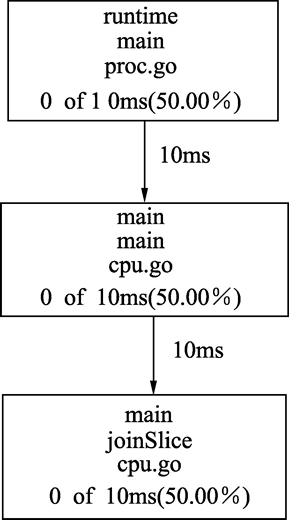

go pprof命令（Go语言性能分析命令）完全攻略
Go语言工具链中的 go pprof 可以帮助开发者快速分析及定位各种性能问题，如 CPU 消耗、内存分配及阻塞分析。
性能分析首先需要使用 runtime.pprof 包嵌入到待分析程序的入口和结束处。runtime.pprof 包在运行时对程序进行每秒 100 次的采样，最少采样 1 秒。然后将生成的数据输出，让开发者写入文件或者其他媒介上进行分析。
go pprof 工具链配合 Graphviz 图形化工具可以将 runtime.pprof 包生成的数据转换为 PDF 格式，以图片的方式展示程序的性能分析结果。
在 www.graphviz.org 网站可以获取到最新的 Graphviz 各平台的安装包。
CentOS 下，可以使用 yum 指令直接安装：
很多第三方的包在系统包 runtime.pprof 的技术上进行便利性封装，让整个测试过程更为方便。这里使用 github.com/pkg/profile 包进行例子展示，使用下面代码安装这个包：
性能分析需要可执行配合才能生成分析结果，因此使用命令行对程序进行编译，代码如下：
最终生成 cpu.pdf 文件，使用 PDF 查看器打开文件，观察后发现下图所示的某个地方可能存在瓶颈。
图中的每一个框为一个函数调用的路径，第 3 个方框中 joinSlice 函数耗费了 50% 的 CPU 时间，存在性能瓶颈。重新优化代码，在已知切片元素数量的情况下直接分配内存，代码如下：
重新运行上面的代码进行性能分析，最终得到的 cpu.pdf 中将不会再有耗时部分。
性能分析首先需要使用 runtime.pprof 包嵌入到待分析程序的入口和结束处。runtime.pprof 包在运行时对程序进行每秒 100 次的采样，最少采样 1 秒。然后将生成的数据输出，让开发者写入文件或者其他媒介上进行分析。
go pprof 工具链配合 Graphviz 图形化工具可以将 runtime.pprof 包生成的数据转换为 PDF 格式，以图片的方式展示程序的性能分析结果。
安装第三方图形化显式分析数据工具（Graphviz）
Graphviz 是一套通过文本描述的方法生成图形的工具包。描述文本的语言叫做 DOT。在 www.graphviz.org 网站可以获取到最新的 Graphviz 各平台的安装包。
CentOS 下，可以使用 yum 指令直接安装：
$ yum install graphiviz
安装第三方性能分析来分析代码包
runtime.pprof 提供基础的运行时分析的驱动，但是这套接口使用起来还不是太方便，例如：- 输出数据使用 io.Writer 接口，虽然扩展性很强，但是对于实际使用不够方便，不支持写入文件。
- 默认配置项较为复杂。
很多第三方的包在系统包 runtime.pprof 的技术上进行便利性封装，让整个测试过程更为方便。这里使用 github.com/pkg/profile 包进行例子展示，使用下面代码安装这个包：
$ go get github.com/pkg/profile
性能分析代码
下面代码故意制造了一个性能问题，同时使用 github.com/pkg/profile 包进行性能分析。本套教程所有源码下载地址：https://pan.baidu.com/s/1ORFVTOLEYYqDhRzeq0zIiQ 提取密码：hfyf基准测试代码如下（具体文件：./src/chapter11/profile/cpu.go）：
package main
import (
"github.com/pkg/profile"
"time"
)
func joinSlice() []string {
var arr []string
for i := 0; i < 100000; i++ {
// 故意造成多次的切片添加(append)操作, 由于每次操作可能会有内存重新分配和移动, 性能较低
arr = append(arr, "arr")
}
return arr
}
func main() {
// 开始性能分析, 返回一个停止接口
stopper := profile.Start(profile.CPUProfile, profile.ProfilePath("."))
// 在main()结束时停止性能分析
defer stopper.Stop()
// 分析的核心逻辑
joinSlice()
// 让程序至少运行1秒
time.Sleep(time.Second)
}
代码说明如下：
- 第 4 行，引用 github.com/pkg/profile 第三方包封装。
- 第 14 行，为了进行性能分析，这里在已知元素大小的情况下，还是使用 append() 函数不断地添加切片。性能较低，在实际中应该避免，这里为了性能分析，故意这样写。
- 第 22 行，使用 profile.Start 调用 github.com/pkg/profile 包的开启性能分析接口。这个 Start 函数的参数都是可选项，这里需要指定的分析项目是 profile.CPUProfile，也就是 CPU 耗用。profile.ProfilePath(".") 指定输出的分析文件路径，这里指定为当前文件夹。profile.Start() 函数会返回一个 Stop 接口，方便在程序结束时结束性能分析。
- 第 25 行，使用 defer，将性能分析在 main() 函数结束时停止。
- 第 28 行，开始执行分析的核心。
- 第 31 行，为了保证性能分析数据的合理性，分析的最短时间是 1 秒，使用 time.Sleep() 在程序结束前等待 1 秒。如果你的程序默认可以运行 1 秒以上，这个等待可以去掉。
性能分析需要可执行配合才能生成分析结果，因此使用命令行对程序进行编译，代码如下：
$ go build -o cpu cpu.go
$ ./cpu
$ go tool pprof --pdf cpu cpu.pprof > cpu.pdf
- 第 1 行将 cpu.go 编译为可执行文件 cpu。
- 第 2 行运行可执行文件，在当前目录输出 cpu.pprof 文件。
- 第 3 行，使用 go tool 工具链输入 cpu.pprof 和 cpu 可执行文件，生成 PDF 格式的输出文件，将输出文件重定向为 cpu.pdf 文件。这个过程中会调用 Graphviz 工具，Windows 下需将 Graphviz 的可执行目录添加到环境变量 PATH 中。
最终生成 cpu.pdf 文件，使用 PDF 查看器打开文件，观察后发现下图所示的某个地方可能存在瓶颈。

图：性能分析
图：性能分析
图中的每一个框为一个函数调用的路径，第 3 个方框中 joinSlice 函数耗费了 50% 的 CPU 时间，存在性能瓶颈。重新优化代码，在已知切片元素数量的情况下直接分配内存，代码如下：
func joinSlice() []string {
const count = 100000
var arr []string = make([]string, count)
for i := 0; i < count; i++ {
arr[i] = "arr"
}
return arr
}
代码说明如下：
- 第 5 行，将切片预分配 count 个数量，避免之前使用 append() 函数的多次分配。
- 第 8 行，预分配后，直接对每个元素进行直接赋值。
重新运行上面的代码进行性能分析，最终得到的 cpu.pdf 中将不会再有耗时部分。
关注公众号「站长严长生」，在手机上阅读所有教程，随时随地都能学习。内含一款搜索神器，免费下载全网书籍和视频。

微信扫码关注公众号